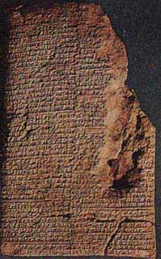

A) Les équations
| Dès la plus haute Antiquité, on rencontre, à l'occasion de problèmes concrets, des exemples de résolution d'équations du premier et du second degré et jusqu'au début du 19e siècle, l'étude des équations constitue l'unique préoccupation de l'algébriste.
En effet, l'homme a imaginé un concept lui permettant de résoudre certains problèmes mathématiques : ce sont les équations. Les équations se composent de plusieurs catégories : Nous parlerons içi des équations du deuxième degré, ainsi que comment les hommes ont surmontés les obstacles qui s'opposaient à la résolution de ces équations. En Mésopotamie, les sumériens ont inventés la première écriture vers 3300 av. J.-C..Des fouilles, commencées au 19e siècle, ont permis d'exhumer plusieurs tablettes d'argile frappées au stylet en écriture cunéiforme et probablement cuites ensuite. Près de 300 d'entre elles concernent les mathématiques et datent soit de la première dynastie babylonienne (1800 à 1500 av J.C.) marquée par le règne d'Hammurabi, soit de la période héllenistique, entre 600 et 300 av J.-C..  Les premiers textes connus sont très courts et traitent pour la plupart de comptabilité, de sacs de grain, d'esclaves, d'animaux domestiques. Une numérotation à base soixante est employée, à l'origine de notre division des heures et des degrés. Cette civilisation extraodinaire voit lui succéder entre 1900 et 1600 av J.-C., un empire dont la capitale est Babylone sur l'Euphrate, juste au Sud de la Bagdad actuelle. Les tablettes de cette époque conservent une foule d'informations, en particulier elles nous révèlent un algèbre déjà très dévéloppé et témoignent de la maîtrise des babyloniens à résoudre des équations du second degré. Les babyloniens
n'écrivaient que des recettes sur leurs tablettes, et ce sont les
grecs qui fonderont les mathématiques sur la méthode de déduction.
6x2 - 6x
+ 4 = 4x2 - 2x + 8
Il distingue six types d'équations de degré inférieur ou égal à deux, dont les coefficients a,b et c sont positifs : ax2 = bx ax2 = b ax =b ax2 + bx = c ax2 + c = bx ax2 = bx + c En outre, pour l'équation
x2 = 8x, il ne donne que la racine 8 (oubliant la racine zéro,
qui n'est pas considérée comme un nombre). Dès justifications
géométriques des résolutions proposées sont
données mais, à l'opposé des grecs, l'esprit de cette
méthode est algébrique.
|